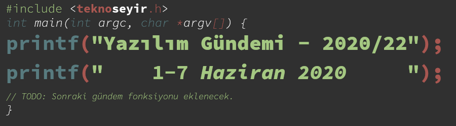
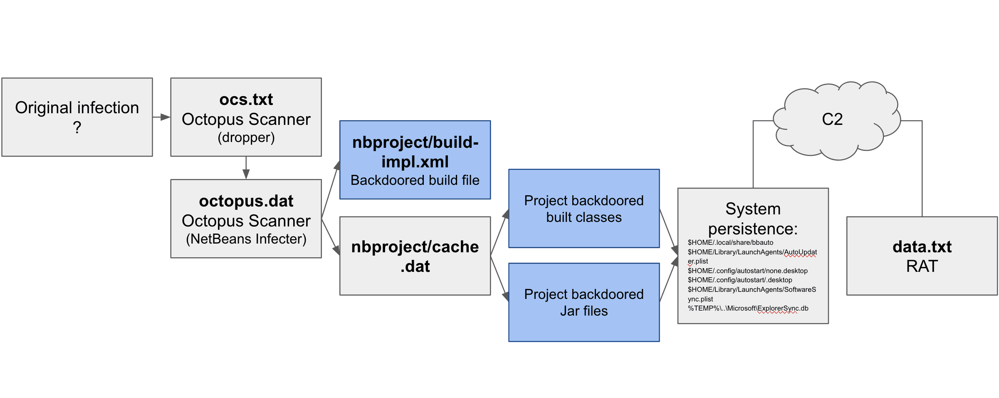

Yazılım Gündemi - 2020/22
1-7 Haziran 2020
İçindekiler
- 1. GitHub, geliştiricileri hedef alan yeni bir zararlıyı ortaya çıkardı: Octopus Scanner
- 2. Microsoft Defender SmartScreen, bağımsız geliştiricileri zora sokuyor
- 3. SpaceX Yazılım Takımı, Reddit üzerinde Soru&Cevap etkinliği gerçekleştirdi
- 4. Tarayıcılara
:is()ve:where()CSS özelikleri geliyor - 5. Swift programlama dili topluluğu kendi Paket Kayıt Servisi'ni tanımlamayı tartışıyor
- 6. Go takımı kaynak kodlardaki "blacklist", "whitelist", "master", "slave" gibi ifadeleri kaldırdı
- 7. Yaklaşan Online Etkinlikler
- 8. Diğer Haberler
- 9. Lisans

< Önceki Gündem | 1-7 Haziran 2020 | Sonraki Gündem >
1 GitHub, geliştiricileri hedef alan yeni bir zararlıyı ortaya çıkardı: Octopus Scanner
Yazılım gündemi yazıları yazmaya başladığımdan beri sıklıkla geliştiricileri hedef alan zararlı yazılımların arttığına yönelik haberleri sizlere iletiyorum fakat bu seferki durum biraz farklı. Mart ayının başlarında GitHub'a JJ takma isimli güvenlik araştırmacısı GitHub'ı bir güvenlik zafiyeti hakkında uyarıyor ve GitHub'ın güvenlik takımı harekete geçiyor. Daha önce karşılaştığımız diğer zararlı yazılım türlerinde saldırganın kendisi kodlarını GitHub'a yükleyip, yemin yutulmasını beklerken bu sefer zararlı kod bulunan depoların (repository) sahiplerinin durumdan haberi yok.

Şekil 2: Zararlı yazılımın bulaşma sistemini gösteren grafik
NetBeans ile geliştirilen Java projelerini hedefleyen bu zararlı yazılım,
ilk olarak bilgisayarınızda NetBeans'in kurulu olup olmadığını kontrol ediyor,
eğer kuruluysa bütün NetBeans projelerinize bekiyor ve proje klasörünüzün
içindeki nbproject dizini altına cache.dat isimli bir dosya bırakıyor.
Daha sonra nbproject/build-impl.xml dosyasını düzenleyerek kendisini sizin
geliştirdiğiniz uygulamanın içerisine enjekte ediyor. Oluşturduğunuz JAR
dosyasının içinde bu zararlı yazılım da oluyor. Zararlı yazılım ise
bilgisayarınızda uzak komut çalıştırmaya yarayan bir arka kapı işlevi görüyor.
Ayrıca zararlı yazılım bulaştığı JAR dosyalarının enjekte olmamış hallerini
üretmeyi de önlüyor, yani kendisinin yerine başka bir şey gelmesini
zorlaştırmış oluyor.
GitHub Güvenlik Takımı, bu zararlı yazılımın bulaştığı 26 tane açık kaynaklı proje tespit etmiş fakat bu projelerin zararlı yazılımdan temizlenmesi biraz sıkıntılı. GitHub, ilgili repository'lerin sahiplerini bilgilendirerek virüsü o depolardan temizlese bile kodları bilgisayarına çekmiş olan kullanıcıların sistemlerinde olan virüs ilgili depolara tekrar kendini kopyalayacak. Takımın elinde Octopus Scanner zararlısının birkaç varyasyonlu kopyası mevcut fakat suçlu olmayan kullanıcıları cezalandırmak istemedikleri için şimdilik bir aksiyon almış değiller fakat geliştiricileri uyarmadan da geçmek istememişler.
Sizler de Java projeleriniz için NetBeans kullanıyorsanız mutlaka
projelerinizdeki nbproject klasörünü kontrol edin. Zararlı yazılım hakkında
daha teknik detaylar için konu başlığına eklediğim blog yazısına göz
atabilirsiniz.
2 Microsoft Defender SmartScreen, bağımsız geliştiricileri zora sokuyor
Microsoft tarafından geliştirilen Windows 10 işletim sistemiyle birlikte dağıtılan Microsoft Defender antivirüs yazılımının bir özelliği olan SmartScreen, bağımsız geliştiriciler tarafından yayınlanan uygulamaları "tanınmayan" (unknown, unrecognized) olarak işaretlediği için kullanıcılar bu uygulamaları çalıştırmaya çekiniyorlar.
Şekil 3: Microsoft Defender SmartScreen tarafından tanınmayan bir uygulamayı açmaya çalıştığınızda gösterilen uyarı penceresi. Yine de uygulamayı çalıştırmak istiyorsanız "More info" yazısına tıklayıp, oradan "run it anyway" düğmesine tıklamanız gerekiyor.
SmartScreen'in çalışma mantığını aslında oyunlardaki "itibar" (reputation)
sistemi gibi düşünebiliriz. .exe ile uzantısıyla dağıttığınız uygulamanız ne
kadar kişi tarafından çalıştırılırsa o kadar güvenilir oluyorsunuz. Fakat tek
değerlendirme kriteri bu değil tabii ki, Microsoft aynı zamanda uygulamanın
kim tarafından yayınlandığına da bakıyor fakat bu basit bir "Geliştiren: Eren
Hatırnaz" ifadesinden ibaret değil, tanınmış bir otorite tarafından onaylanmış
bir sertifika almanız ve kodlarınızı bu şekilde imzalamanız gerekiyor. Tahmin
edebileceğiniz gibi ücretsiz bir işlem değil bu. Kod İmzalama Sertifikası
fiyatları sitelere göre değişiklik gösterse de bağımsız geliştiriciler için
uygun denilebilecek bir noktada değil. Üstelik web tarafında ücretsiz SSL
sertifikası sağlayan "Let's Encrypt" gibi bir çözüm de bu tarafta mevcut
değil.
Şekil 4: ssl.com sitesinin Kod İmzalama Sertifikasının yıllık fiyatları
Bu sertifika ile dağıttınız exe dosyalarını imzalamak maalesef "güvenilir" olmaya yetmiyor. Çünkü zararlı yazılım geliştiren kişi de aynı şekilde fiyatını verip, dağıttığı virüsün "güvenilir" sayılmasını sağlayabilir. Dolayısıyla SmartScreen'in 'itibar' sistemi hala daha geçerli. Exe dosyanız imzalı olsa bile SmartScreen, daha fazla kullanıcı bu programı çalıştırana kadar uyarıyı göstermeye devam ediyor. Fakat burada şöyle bir sonsuz döngü de ortaya çıkıyor: Kullanıcılar uyarı aldığını için programdan şüphelenip kurmuyorlar, kurmadıkları için SmartScreen, ilgili programın itibar puanını yükseltmiyor, programın itibarı yükselmediği için de kullanıcılar uyarı mesajı görmeye devam ediyor.
Üstelik SmartScreen sertifika yenileme işlemini tanımıyor. Yani yeni bir sertifika aldığınızda tüm bu süreçleri baştan yaşamanız gerekiyor. Bunun da bir çözümü mevcut fakat bağımsız geliştiriciler için değil, büyük yayıncılar için mevcut. EV Code Signing Sertifikaları burada devreye giriyor. Yazılım bu tarz sertifikalar ile bir kere imzalandıktan sonra SmartScreen'den otomatik olarak geçiyor. Fakat dediğim gibi bu sertifikaların fiyatları bağımsız geliştiriciler için hiç de ulaşılabilir noktalarda değil.
Sonuç olarak Windows ekosistemi için bağımsız olarak uygulama geliştirmek ve dağıtmak bir eziyet haline geliyor. Açık kaynak dünyasına iyi bir giriş yapan Microsoft'un artık Windows ekosistemiyle ilgili bazı şeyleri de tekrar gözden geçirmesi gerekiyor.
Bu konuda siz ne düşünüyorsunuz? Yorumlar bölümünde konuşalım.
3 SpaceX Yazılım Takımı, Reddit üzerinde Soru&Cevap etkinliği gerçekleştirdi
Bir önceki hafta gerçekleşen başarılı Crew Dragon 2 görevinden sonra gündeme gelen SpaceX, geçtiğimiz hafta da Reddit üzerindeki /r/spacex kanalında yazılım ekibiyle soru & cevap etkinliği gerçekleştirdi. Binlerce yorum içerisinden benim gözüme çarpan bazı soruları ve ekibin yazdığı cevapları sizlere aktarmak isterim.
Falcon 9 roketinde ve Dragon kapsülünün yazılım tarafında en çok kullanılan programlama dili nedir? Hangi programlama paradigmalarını kullanıyorsunuz? Kaynak
Otonom sistemlerdeki yazılımların tamamı C++ programlama diliyle ve nesne yönelimli programlama teknikleriyle geliştirildi. Her şeyi mümkün olduğunca basit tutmaya çalışıyoruz.
Uçuş sırasında hata algılama ve hata doğrulama işlerini nasıl yapıyorsunuz? Kaynak
Bilgisayarın hesaplamasından kaynaklanabilecek sorunlar için farklı bilgisayarlar üzerinde aynı hesaplamaları yaptırıyor ve çıktılarını karşılaştırıyoruz. Sensörlerden kaynaklanabilecek hatalar için de aynı şekilde birden fazla sensör verisini değerlendiriyoruz. Veri aktarımı sırasında ortaya çıkabilecek sorunlar için ise aktarılan verilerin içerisine eklenmiş hata tespit ve hata doğrulama kodlarını kullanıyoruz.
Yazılımlarınız küçük küçük parçalardan oluşan bir yapıda mı yoksa her şey tek bir büyük modül olarak mı geliştiriliyor? (Kısaca micro service mi, yoksa mono-repo mu kullanıyorsunuz demek istemiş) Kaynak
Yazılımlarımız kesinlikle birden çok küçük modülde oluşan bir yapıda. Araçtaki alt seviye komponentlerden, ara sistemlere kadar her kısımda bir hiyerarşi mevcut. Farklı alt sistemler genelde birbirlerinden izole edilmiş durumda; bu izolasyon bazen aynı bilgisayar içerisinde olabilirken, bazen de farklı bilgisayarlarla sağlanmış izolasyonlar tercih edebiliyoruz.
Yazılımlarınızı araçlara yüklemeden önce nasıl test ediyorsunuz? Falcon/Dragon/Starlink için ne kadar telemetri verisi topluyorsunuz? Buveriler üzerinde makine öğrenmesi ya da veri analizi yapıyor musunuz? Kaynak
Her cihaz için, loop simulator'de olan bir donanıma sahibiz (anladığım kadarıyla yazılım ekibinin elinin altında sadece geliştirme için kullanılan cihazın bir kopyası mevcut). Production ortamına gitmeden önce tüm kodlarımız bu simülasyonda test edilip sonra asıl aracın içine yükleniyor.
Tipik bir Dragon görevinde yüzlerce GB telemetri verisi topluyoruz. Starlink cihazlarımız için bu durum 5TB gibi rakamlara ulaşmış durumda. Her uçuştan sonra, topladığımız tüm verileri gözden geçirip, ilgili cihazın beklediğimiz gibi çalışıp çalışmadığını kontrol ediyoruz.
Benim okuduklarım içerisinde gözüme çarpan ve aktarmak istediğim sorular ve cevapları bu şekildeydi (hatalı çevirdiklerim varsa lütfen yorumlar bölümünde beni uyarın) fakat ilgili reddit gönderisinin altında ilginizi çekebilecek yüzlerce hatta binlerce soru ve cevap görebilirsiniz. Konu başlığına eklediğim bağlantıya tıklayarak ilgili gönderiye ulaşabilirsiniz. Eğer sizin ilginizi çeken başka bir soru ve cevabı varsa yorumlar bölümünde bundan bahsetmeyi unutmayın.
4 Tarayıcılara :is() ve :where() CSS özelikleri geliyor
WebPlatform.news sitesinde geçtiğimiz hafta yayınlanan blog yazısına göre yeni
CSS standartlarından :is() ve :where() artık tarayıcılar tarafından
desteklenecekler. Safari ve Firefox bu özelliği implement etmişler, Chromium
ise özellik üzerinde çalışmaya başlamış gözüküyor. Gelelim bu özelliklerin ne
işe yaradıklarına:
4.1 is() özelliği
is (Dokümantasyon) aslında bir parametre olarak birden fazla CSS selector
kabul edip, içerisindeki seçiciler tarafından seçilebilen herhangi bir
elemanı seçen bir pseudo-class. Cümle biraz karışık oldu farkındayım ama
aşağıdaki örneği inceleyince ne demek istediğini anlayacaksınız. Diyelim ki
elimizde şöyle bir HTML yapısı var:
<div class="div1"> <h1>Selam TeknoSeyir</h1> </div> <div class="div2"> <h1>is() özelliğini</h1> </div> <div class="div3"> <h1>deniyoruz</h1> </div>
ve her div'in içerisindeki h1 elemanının yazı rengini kırmızı yapmak istiyoruz. Önceden bunu şu şekilde yapıyorduk:
.div1 h1, .div2 h1, .div3 h1 { color:red; }
Fakat artık böyle daha sade bir şekilde yazabileceğiz:
:is(.div1, .div2, .div3) h1 {
color: red;
}
Önceden bu ihtiyacımızı :any() ile giderebiliyorduk fakat onda istediğimiz
düzeyde karışık seçicileri kullanamıyorduk.
:where() özelliği de :is() ile benzer bir yapıya sahip fakat bazı farkları
mevcut. Front-end tarafına pek yakın birisi olmadığı için ne kadar anlamaya
çaba göstersem de farklarını tam olarak anlayamadım o yüzden sizi Mozilla
Developer Network'deki dokümantasyon sayfasına yönlendirmek durumundayım. Eğer
konu hakkında bilgili arkadaşlar varsa lütfen yorumlar bölümünde bizimle
paylaşsın.
5 Swift programlama dili topluluğu kendi Paket Kayıt Servisi'ni tanımlamayı tartışıyor
Apple tarafından geliştirilen açık kaynak kodlu programlama dili Swift, geçtiğimiz Haziran ayında GitHub'ın kendi paket kayıt (Package Registry) servisine eklenmişti. Fakat bu paket kayıt sisteminin GitHub'ın tekelinde olmasını istemeyen topluluk üyeleri Swift'in kendi paket kayıt servisini tanımlaması gerektiği konusunda tartışmalar başlatmıştı. Geçtiğimiz hafta ise bu paket kayıt servisini tanılamak için bir öneri taslağı ("proposal") yayınlandı.
Burada şunu belirtmekte fayda var: Swift programlama dilinin, projedeki bağımlılıklarınızı yönetebileceğiniz bir paket yönetim aracı zaten var; burada konuşulan paket npm gibi, RubyGems gibi paket kayıt sistemleri. Elbette bu tartışmaların sonucunda yine bu paket yöneticisine, kendi paket kayıt servislerimizi ekleme özelliğinin gelmesi planlanıyor.
Swift programlama dilinin forum sayfasında ilgili tartışma devam ediyor. İlerleyen süreçlerde ne gibi sonuçların çıkacağını hep birlikte göreceğiz.
6 Go takımı kaynak kodlardaki "blacklist", "whitelist", "master", "slave" gibi ifadeleri kaldırdı
Amerika Birleşik Devletlerinde bir polisin siyahi bir vatandaşı öldürmesiyle başlayan olaylardan sonra ırkçılık konusuyla ilgili var olan hassasiyetlerin seviyesi de oldukça artmış durumda. Geçtiğimiz hafta içerisinde de Google tarafından geliştirilen Go programlama dilinin kaynak kodları içerisindeki "kara liste" ("siyah liste"), "beyaz liste", "efendi" ve "köle" gibi ifadelerin yerini "allowlist" ("kabul listesi"), "blocklist" ("engel listesi"), "control" ve "process" gibi ifadelere bıraktılar.
Özellikle "blacklist" ve "whitelist" sadece programlama alanında değil birçok farklı alanda da artık kalıplaşmış kelimeler olduğu için pek önemli değil gibi gözükse de biraz düşününce aslında bu değişikliğin mantıklı olduğu ortaya çıkıyor. En azından bana öyle geliyor. Kaynak kodlardan bu tarz ifadelerin kaldırılması iyi olmuş bence de.
7 Yaklaşan Online Etkinlikler
8 Diğer Haberler
- Apple, parola yöneticisi uygulamalar için yeni kaynaklar yayınladı. GitHub Deposu
- Atlassian, yeni DevOps özelliklerini duyurdu.
- Microsoft Azure takımı, Azure Maps Creator hizmetini ön izleme olarak kullanıma açtı.
- IBM, MacOs ve iOS için kendi şifreleme araç setini duyurdu. Linux ve Android için de yakında gelecekmiş.
- Amazon ve Slack partnerliklerini duyurdular.
- AWS, 2. Nesil AMD EPYC işlemcili EC2 C5a makinelerini kullanıma açtı.
- Git v2.27.0 sürümü yayınlandı.
- PhpStorm 2020.2 EAP 2 sürümü yayınlandı.
- Rust programlama dilinin 1.44.0 sürümü yayınlandı.
- MultiCore OCaml projesi için Mayıs 2020 raporu yayınlandı.
- Blazor WebAssembly 3.2.0 sürümü yayınlandı.
- Polaris v1.0.0 sürümü yayınlandı.
- Wine 5.10 sürümü yayınlandı.
- Kuesa 3D 1.2 sürümü yayınlandı.
- LibreSSL 3.2.0 sürümü yayınlandı.
- TerminusDB v2.0.0 sürümü yayınlandı.
9 Lisans

Yazılım Gündemi - 2020/22 yazısı Eren Hatırnaz tarafından Creative Commons Atıf-GayriTicari-AynıLisanslaPaylaş 4.0 Uluslararası Lisansı (CC BY-NC-SA 4.0) ile lisanslanmıştır.